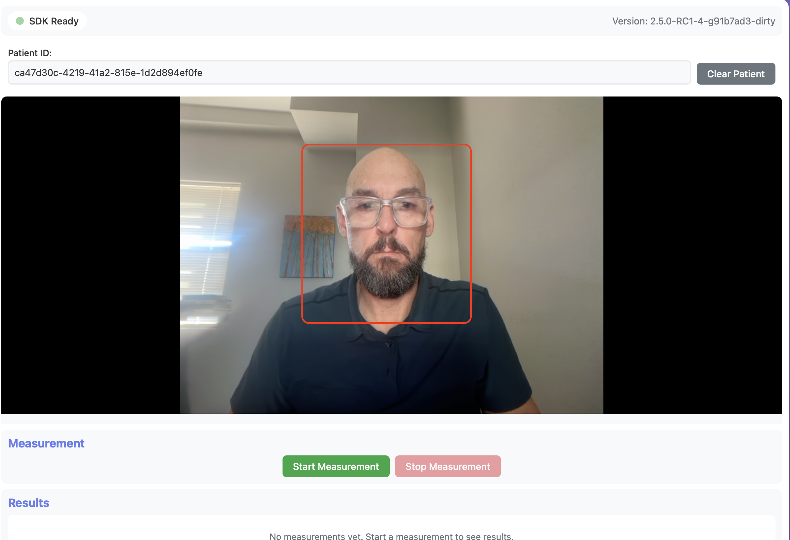

Vitals Web SDK - Vanilla JavaScript Example
A complete working example demonstrating integration of the Vitals Web SDK with a Node.js/Express backend.
Quick Start
# Install dependencies
npm install
# Configure environment
cp .env.example .env
# Edit .env with your Mindset API credentials
# Start server
npm start
Then open http://localhost:3015 in your browser.

Depending on the device used, a user should be positioned approximately 12-18 inches from the camera in the area outlined in this screenshot.Setup
Prerequisites
- Node.js 18+
- Modern browser with camera support (Chrome recommended)
- Mindset API credentials (API key and clinic ID)
Configuration
Create .env file in examples/vanilla-js/:
MINDSET_API_URL=https://api-develop.mindsetmedical.com
MINDSET_API_KEY=your-api-key-here
CLINIC_ID=your-clinic-id-here
PORT=3015
How It Works
This example is the reference implementation for a complete end-to-end flow:
- Create Patient - Creates patient record via Mindset REST API
- SDK Initializes - Camera starts, preview mode begins
- Start Measurement - SDK calls authenticator → server creates notification → returns WASM auth
- Measure Vitals - Follow guidance (face centered, well-lit, still)
- Submit Results - SDK stops → client library sends vitals → server submits to Mindset REST API using clinic API key
Data Flow
Client Library Server Mindset REST API
-------------- ------ ----------------
createPatient() ────────> POST /patient/create ─────> POST /users/shadow
← patient ID
authorize() ───────────> POST /auth ─────────────────> POST /notifications
(with runToken) ← notification + vitals_auth
(stores meta.pro_submission_id)
stop() → vitals ───────> POST /patient/vitals ──────> PUT /pro_submissions/{proSubmissionId}
(uses clinic API key) (via PROVIDER_SERVICE scope)
Security: Client library never sees auth tokens, notification IDs, PRO submission IDs, or the clinic API key. Server handles all authentication using the clinic API key.
For complete REST API documentation, see Mindset REST APIs.
Backend Endpoints
POST /patient/create
Creates a new patient record.
Response:
{
"success": true,
"patientId": "uuid"
}
POST /auth
Authorizes WASM algorithm and creates notification.
Request:
{
"patientId": "uuid",
"runToken": { "config": "...", "pubKey": "..." }
}
Response:
{
"success": true,
"vitalCoreAuth": { "authToken": "..." }
}
Note: Server stores meta.pro_submission_id internally. Client library never sees it.
POST /patient/vitals
Submits vitals to Mindset REST API PRO system using clinic API key.
Request:
{
"patientId": "uuid",
"vitals": {
"vitals": {
"vitals": {
"PR_GW": { "hr": 72, "hrConfidence": 95 },
"RR_GW": { "rr": 16, "rrConfidence": 90 }
}
},
"signsMsgs": { "1234567890": { "dataStatus": ["S-HRT-061"] } },
"finalVitalsMeasurementValues": {
"PR_GW": { "hr": 72, "hrConfidence": 95 },
"RR_GW": { "rr": 16, "rrConfidence": 90 }
},
"prevVitals": [],
"prevSignsMsgs": [],
"noValidMeasurements": false,
"webAppVersion": "1.0.0",
"frameCollectionMethod": "web-sdk",
"timestamp": 1234567890
}
}
Response:
{
"success": true,
"data": { /* PRO submission record */ }
}
Note: SDK provides complete VITAL-TRAC structure ready for submission. Server uses MINDSET_API_KEY to submit via PUT /users/{id}/pro_submissions/{proSubmissionId} with PROVIDER_SERVICE scope, passing the vitals data directly: { pro_type: 'VITAL-TRAC', pro_data: { data: vitals, recorded_at: ... } }. The proSubmissionId value is meta.pro_submission_id from the authorization response, not the notification id.
SDK Integration
Basic Setup
import { createVitalClient } from '/dist/index.js';
// Authenticator callback
async function authenticateVitalCore(runToken) {
const response = await fetch('/auth', {
method: 'POST',
headers: { 'Content-Type': 'application/json' },
body: JSON.stringify({ patientId: currentPatientId, runToken })
});
const data = await response.json();
return data.vitalCoreAuth;
}
// Create client
const vitalClient = createVitalClient({
workerDirectory: '/dist',
authenticator: authenticateVitalCore
});
// Set up events
vitalClient.on('ready', () => console.log('SDK ready'));
vitalClient.on('authorizedVitals', (vitals) => console.log('Authorized:', vitals));
vitalClient.on('timeLeft', ({ timeLeft, percentComplete }) => {
updateProgress(percentComplete);
});
vitalClient.on('signsMessage', (msg) => handleWarnings(msg.dataStatus));
vitalClient.on('stop', (result) => displayResults(result));
// Initialize and start
await vitalClient.init();
await vitalClient.startPreviewMode(videoElement);
await vitalClient.authorize();
await vitalClient.start(selectedVitals, videoElement);
Key Events
ready- SDK initializedauthorizedVitals- List of authorized vitalstimeLeft- Progress updates (includespercentComplete)signsMessage- Real-time quality feedbackstop- Measurement complete
Warning Codes
| Code | Message |
|---|---|
E-FDM-041 |
Face not detected |
E-DQM-021 |
Please stay still |
E-DQM-022 |
Improve lighting |
W-RES-079 |
Face too far |
W-RES-080 |
Face too close |
Troubleshooting
Patient creation fails:
- Check
MINDSET_API_KEYandCLINIC_IDin.env
Camera not working:
- Use HTTPS or localhost
- Allow camera permissions
Authorization fails:
- Verify API credentials
- Check server console for errors
- Ensure clinic has vital core features enabled
Measurement issues:
- Call
authorize()beforestart() - Ensure face is visible and well-lit
- Check
authorizedVitalsevent for available vitals
Development
# Start server
npm start
# Changes to public/ files are served immediately
# Refresh browser to see updates
Example with Retries
This example runs a single measurement session: you measure once and submit whatever the SDK returns. If a vital doesn't come back (poor lighting, movement, the session timing out before that vital is ready), there's no second attempt.
For apps that need more than one try, there's a slightly more complex companion
example, vanilla-js-retries, that adds retries
within the same session. It's the same end-to-end flow as this example (same
backend, same endpoints, same submission shape) with an app-level retry loop on
top. The SDK itself still measures one session per start()/stop() and does
not retry on its own; the loop lives in the example app.
How it works:
- Measure the authorized vitals once.
- Keep any vital that came back. Readings accumulate across attempts in a
collectedmap, so a vital read on an earlier attempt is kept even if a later attempt re-measures the others. (Example: RR comes back on attempt 1 and PR on attempt 2 - the final result has both.) - If something is still missing, the example does NOT auto-retry. It prompts
the user: the Start button becomes Retry and Stop becomes Done.
- Retry runs another attempt, re-measuring only the still-missing vitals.
- Done stops and submits what's been collected so far.
- Stop early once every wanted vital has a reading, or after
MAX_ATTEMPTS(default 3) is reached. - Submit once, after the loop finishes - not on each attempt.
Key points:
- One session = one PRO. All attempts in a session aggregate into the same
pro_submission, submitted once. Retries do not create extra PROs. - A new session is a new PRO. After a result is submitted the Start button
reads Start New Session; clicking it creates a fresh PRO (via a
POST /patient/new-probackend call) so it doesn't overwrite the previous one. - The submitted payload is unchanged. The loop returns the SDK result with the
aggregated readings merged in, keeping the same envelope (
webAppVersion,frameCollectionMethod,timestamp, etc.), so the samePOST /patient/vitalsbackend handles it without changes.signsMsgsis the most recent attempt that logged signs messages; earlier attempts go inprevSignsMsgs(newest-first).
Where to look in vanilla-js-retries/public/app.js:
MAX_ATTEMPTS- how many attempts to allow (a ceiling, not a target)gotReading(tag, value)- whether a vital has a usable reading; tighten this to clinical ranges if you want to reject and retry out-of-range readingsmeasureOnce(vitals)- runs one attempt, resolves on itsstopeventwaitForRetry(...)- the Retry/Done prompt between attemptsmeasureWithRetries(wantedVitals)- the retry/aggregate loop
See the vanilla-js-retries README for more.
License
UNLICENSED - For demonstration purposes only